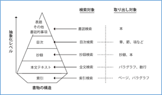
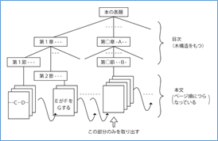
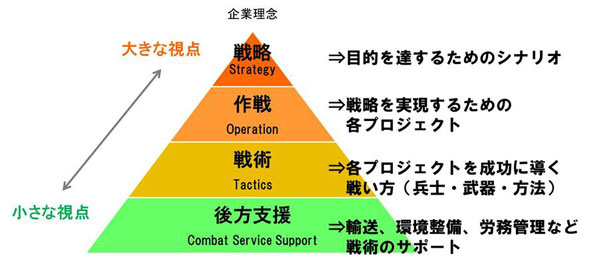

- DAX42-2019図書館司書課程の図書館ガイダンス
- 【2018年4月24日】
- 国立・専門図書館分科会流れ（2時間20分）
- 現役生との交流の場
- 職場での仕事はどんな感じか。自分に合う職場か？
- 講師自己紹介（15分×4）
- 現在の仕事、過去のキャリア、就職時の状況等
- 学生からの質問応答
- 氏名と志望を順に
- 個別に応答？
- 他の参加者との質疑
- ディスカッション
- 2018年4月21日記録
- 自己紹介
- この場での立ち位置
- 元国会図書館
- 過去のキャリア
- 民間、行政の独立行政法人、第三セクタ、立法府の国立国会図書館
- NDLでの業務
- 転職のたびに保守的な機関になる
- 転職時の状況(長尾館長へのメモより)
- 立法府も、民間、行政を見習う必要がある
- 単館主義⇒自己完結型業務
- 紙資料の目録至上主義
- 労働集約的な業務、個人のスキルに依存
- 退職時の状況
- 入館時に進めたいと思ってきたことが、未だ実現していないかも
- 現在の仕事
- 家でマイペースの仕事をと思っていた
- 生活習慣病を指摘されたので、出勤する仕事
- 退職後、外から見ていると、現役の時よりも、技術の進展、市場の拡大が加速している。
- デジタルトランスフォーメーション
- 第4次産業革命（AI、ロボット、IoT,,,）
- 学生からの質問および回答
- 公共図書館との違い
- NDLは保存図書館
- 国立図書館と国会図書館が一緒になった
- 立法府に所属し、公共図書館を取りまとめる位置付けはない
- 専門職として保存、情報システム関係。その他は総合職、一般職であり、様々な部署を渡り歩く。
- NDLはどんなところ
- 収集
- 納本制度により、国内刊行物を収集。パッケージ、インターネット情報、オンライン資料（電子書籍、電子雑誌）へ拡大
- 組織化
- 人手により、目録規則、前例に従って書誌作成
- 保存
- 永久保存
- 紙は書庫
- 原本を保証するためにデジタル化
- デジタルは、電子書庫⇒デジタルアーカイブ
- アクセスを保証するために、マイグレーション
- 稼働環境を保証する必要があるコンテンツは課題
- 提供
- 紙資料
- 閉架式、検索して閲覧申込み、複写申込み
- デジタル資料
- スキャナーでイメージファイル化し、デジタルコレクションとして、インターネット公開、図書館送信、館内閲覧環境で
- レファレンスサービス
- 図書館らしい業務
- 国会サービス
- 国会議員からの依頼調査
- 事前の予測調査
- 官房業務
- 総務、人事、会計、管理
- デジタルコレクションの難しさ
- いつでもどこでも利用できるように
- イメージ化⇒テキスト化⇒全文検索⇒知識化
- 資料しやすく、見つけやすく、関連付けられた知識として活用できるように
- デジタル化費用の確保
- マイグレーション
- 今後、検索、分析のためのテキスト化、構造化を目指す
- DBを纏める意義
- DBは分散。所蔵場所に関係なく一元的に検索、ナビゲート
- 最後に
- 将来展望
- 情報資源を扱う組織の戦術、業務形態は、大きな変革の時期に来ている
- 図書館には信頼性の高い情報が集約されている
- 書誌、テキストデータ、イメージデータ
- レファレンス事例
- システムを構築する人とシステムを活用してサービスを運用
- システムエンジニア
- データサイエンティスト
- サービス設計、運用管理
- ルーティンワーク、マニュアル化された業務は、限りなくAI、AI化されたロボットが担う
- 効率化により、人はよりデザイン思考でより創造的な業務へ
- デジタルアーカイブ ジャパン ⇔ 文化情報資源のナショナルアーカイブ
 【詳細】デジタルアーカイブ ジャパン【テキストから抜粋】
【詳細】デジタルアーカイブ ジャパン【テキストから抜粋】- あらゆる分野、業種業態を越えた情報資源を一元的に利用できるアーカイブ
- 恒久的保存基盤（あらゆる情報の恒久的保存）
- 知識として組織化された形での保存
- 単なるデジタル化、テキスト化から、意味的内容によるマイクロコンテンツ化と関連付けされたDB
- 分野での情報の網羅性・完全性が重要であり、また異分野の情報との関連付けにより、AIとしての知識として活用できる。
- 知識創造基盤（新たな知識創造活動の場）
- 知識創造支援機能
- 辞書類作成
- 辞書類の作成において、コーパスは、AIの支援により省力化が進むと思われる。
- 件名典拠、シソーラスは、
- 本文フルテキストもAIへの入力データとして特徴量を抽出することにより、書誌データのみならず、本文テキストから標目を抽出することが可能になり、
- また、コーパスを利用することにより、同義語、上位語、下位語、関連語、分類記号の関係づけをすることも可能になると思われる。
- 固有名典拠は、
- 既に刊行されている書籍の著者に関して、AIを利用して、著作名、著者、出版年、NDC分類等の特徴量を抽出・分析することにより、著者の自動同定の精度は相当向上すると思われる。
- AIにより、省力化、自動化ができることにより、書籍だけでなく雑誌記事等も含めて、固有名典拠の自動作成が可能になる。
- NDC分類は、
- 件名典拠をベースにした分類の番号体系は、人間の判断によるところが大きいので、容易にAI化することは困難と思われるが、分類を番号体系でなく意味的なシソーラス体系として維持し、改訂していく作業は、AIにより体系を整理することは可能になる。また番号体系の版毎の対比表の維持も人手を介さずに行えるようになると思われる。
- ただ、配架のための分類という考え方、資料検索のための分類体系は、全文検索を含めて様々なレベルでの検索が容易になってくる状況において、役割を問い直す必要があるのではないか。
- 情報を関連付けるための情報
- 共通語彙
- 分野を超えた情報交換を行うには、個々の単語について、表記・意味・データ構造を統一し、互いに意味が通じるようにすることが必要であり、AIの知識として蓄積する場合、共通語彙になっていることが学習の効率を高められる。
- コーパス、オントロジー、分野別シソーラス、各種用語辞書、DBPedia等
- それらが、永続的識別子となって、Linked Data化されていると、より精度の高い関連付けが可能になる。
- IMI：情報共有基盤への参画
- データに用いる文字や用語を共通化し、情報の共有や活用を円滑に行うための基盤であるIMI(Infrastructure for Multilayer Interoperability:情報共有基盤)の構築への参画、連携が重要である。
- 情報に関する情報の組織化
- 情報の組織化は、二次情報としての書誌、メタデータの作成があるが、新しい著作物に対するNDC分類、件名などは、既存の書誌、典拠を教師データとして蓄積することにより、AIによりかなりの精度の自動付与が可能になる。
- 専門家は、AIによる精度に応じてチェック、補正することが役割になるのではないか。また、雑誌記事に関しても、記事を著作単位とした書誌作成がAIにより省力化して付与が可能になる。
- 「未来の図書館を作るとは」（長尾真）より抜粋
- 図書・資料は部品に解体され、それぞれが種々の観点からリンク付けされた巨大なネットワーク構造が作られるようにする
- 目次情報を付けたり、本の表紙の画像や数行の簡単な要旨を付ける
- 動画・静止画・音声は、画像認識機能により自動タグ付け
- 検索システム
- 
- 書籍の構造化
- 
- 知識創造活動
- 新たな知識を創造する活動は、図書館等のアーカイブ機関の主たる目的の一つであり、デジタル知識基盤の中で、恒久的保存基盤に格納された網羅的な情報を活用して新たな知識を創作する活動である。
- 歴史的な文化財や現代文化を映像化、画像化、テキスト化する活動、構造化された情報に解題情報等を付与する活動、情報間を意味的に関連付ける活動、テーマを設定してデジタルギャラリを構築する活動等も創造活動の一つと位置づけられる。
- 創造活動が、効率的に行えることにより、質、量ともに多くの知識が再生産され、創造された知識は、恒久的保存基盤でアーカイブされることを想定した。
- 「未来の図書館を作るとは」（長尾真）より抜粋
- 従来の書誌情報の考え方をマルチメディア情報に対応できるように拡張かつ詳細化するとともに、対象資料に関係する様々な種類の情報にリンクをはり、それらの情報をたどってゆけるようにする
- 既存の知識から自分の必要とする部分を切り出して、新たな発想の著作を創造し、新たな知識とする
- 新たな知識創造の場としての図書館
- 図書館等の機関は、自館が保有している資料に加えて、「デジタル知識基盤」で共有されている知識を組合わせて提供し、知識創造の場として、施設としての実空間と、インターネットを利用した仮想空間が、相互にシームレスに、「場」として利用できるものを想定する。
- 情報を媒介して専門家と専門家を繋ぐこと、様々な組織が持つ情報が関連付けられて、それぞれの組織を中心に活動していた人が繋がっていくこと、専門家を媒介して辞書と辞書を繋ぐことを可能にして、様々な分野の人たちが保有する知識が有機的に関連付けられ、それを活用して、更に利用者同士がつながっていく「場」としての機能を期待する。
- 「未来の図書館を作るとは」（長尾真）より抜粋
- 議論の場の提供という図書館機能
- 解決したいという人達と研究者、そして図書館司書のグループが種々の角度から資料をもとに議論
- 考え方の違う人達が知識を共有し、その違いを議論を通じて明らかにすると共に、新しい知識・思想を作り出してゆく場
- 出版社、著者と読者をつなぐ場としての図書館
- 図書館が司書による相談サービス、あるいは自動的な案内サービスをする場合でも、自分の電子書棚を作りたいという人の多くは図書館から借りるのではなく出版社のデータベースの方に行き、書物を購入することになるわけで、図書館は出版社と読者を結合する接続業者のようになってゆく
- レファレンスサービス
- 利用者からの問い合わせに対して、AIを利用して、必要とする内容に最もマッチングする資料名、所在場所へナビゲーションする。資料がオープンデータであれば、参考となる内容の記載部分を列挙し、さらに答えとしての事実まで提示が可能になる。
- 自然言語処理機能を利用することにより、音声での自然言語の問いに対して、「デジタル知識基盤」を知識としたAIが、解の候補を抽出し、それを音声での自然言語で回答することが可能になる。
- 「未来の図書館を作るとは」（長尾真）より抜粋
- 司書の世話にならなくてもある程度のレファレンスサービスが受けられるように
- 自然言語による質問要求を受け付けて、取り出したものがその要求に対応するものであるかどうかを自然言語処理技術によって調べ、できるだけ質問要求に近いものだけを選択する
- 事実に基づいた報告書
- 依頼または予測調査に関しては、AIを利用した文献の意味的内容検索により、最もマッチングする資料名、資材場所を探し出し、その資料がオープンデータ化されていた場合は、記述された内容を洗い出し、内容を要約して報告書の原案を作成することも数年で実用可能と思われる。
- 知識利活用基盤（情報発信）
- 恒久的保存基盤に格納された一次情報、コンテンツ創造基盤で創出された二次的情報が、デジタル知識基盤の中でAIの機能を活用して有機的にネットワーク化され、あらゆる分野で利活用できるようにする。
- 見るだけのアーカイブ」から「使い、創り、繋がり、伝えるアーカイブ」として、広く国民による新たな知識の創造、新産業の創出、地域活性化、防災・減災、教育活用、教養・娯楽、観光、国際文化交流等、様々な利用者毎の目的に応じて、恒久的保存基盤に格納された一次情報、コンテンツ創造基盤で創出された二次的情報を有機的に組み合わせて、利用できるようにする。
- 知識検索機能として、網羅的な情報から、利用目的に応じてあらかじめ適切に絞り込み、利用者の属性、スキル、利用場所に応じて、様々な画面インターフェースを用意して、利用者が必要とする情報、参考となる関連する情報を容易に得られるようにする。
- 「未来の図書館を作るとは」（長尾真）より抜粋
- 電子図書館になって取り出す単位が書籍の単位ではなく、書籍の中の章や節、パラグラフ、あるいはこんな内容が書かれている部分のみ
- 自動的な形で適切な知識の所在にまでナビゲートしてゆくシステム
- その本のどこに書かれているかを探すというのではなく、自分の欲しい情報そのものが出てくることになる。
- 書誌検索のような単純、単一の検索でなく、種々の検索のモードを提供する
- 種々のあいまいさを許すあいまい検索の工夫
- 自分の知識の外部記憶装置
- 「未来の図書館を作るとは」（長尾真）より抜粋
- 個人によって違った知識の構造の部分については、その人の力によって種々の検索方式を試み、自分の必要とする情報をとり出して中立的な知識の構造に付加してゆくことが出来ねばならないし、またそれによって自分に合った知識の構造を作りあげてゆく
- 自分の書棚を電子的に作れば、自分の連想に基づいて自分の本や本の部分部分をリンク付けして自分の知識の構造に合った自分図書館を作って楽しむことができる
- 現在のAIの技術で、デジタル知識基盤にある共通的な知識から個人のスキル・嗜好に合わせてパーソナライズするとともに、個人が保有する知識を組み合わせて、自分専用のインテリジェンスは外部記憶装置を持つことが可能になる。
- スマートフォン等からこの外部記憶装置にアクセスして、
- ①可能な限り「事実情報」を提供する、出来ない場合は、
- ②参考になりそうな文献候補を提示する、
- ③その文献候補の所蔵先へ案内する。
- ④デジタル化された情報があれば、閲覧サービスまでナビゲート、
- ⑤デジタル化された情報がなければ、入手可能なサービスへナビゲートという仕組みは、
- もう実現可能な段階になっている。
- 運用基盤
- データ保存課題、人材不足問題、資金不足問題、権利処理コスト問題など、デジタルアーカイブの活性化を阻害する課題を制度的に克服する方策(人材育成策・予算措置・権利処理に関する法改正など)を導き出し、解決を図っていく中核的な役割を担う推進母体(司令塔)としての組織・体制も必要である。
- この基盤では、ナショナルアーカイブ全体の戦略企画、デジタル情報の保存や利活用のための調査研究、研究開発、デジタル化支援、アーカイブに所蔵された資料に関する知識、読解力とIT技術の知識等も備えた高度な専門的人材の育成、孤児著作物の権利処理や、絶版作品のデジタルアーカイブ化における所有権、肖像権問題も含めた権利情報DBの構築を促進する等の役割を持つことを想定する。
- 第4次産業革命と言われている技術、仕組みを如何に活用していくかの目標設定と、AIを使い方を考える「デザイン思考」が重要
- 「未来の図書館を作るとは」で示された大半のことは、AIの進展により、遠い未来のことではなくなっている
- 終了後質問回答
- 人はAIに取って代わられてしまうのか？
- シンギュラリティ（技術的特異点）はいつか来る
- 2044年とは、今の技術の進展から予測したもの。技術的は突然変異があると、もっと早く訪れる可能性もある
- 人が行う仕事
- 信頼性の高い情報を収集できるようにルールを考える現場のライブラリアン
- AIにどんな情報をどんな形で学習させるかを考えるデータサイエンティスト
- AIをどのように活用したシステムを構築するかを考えるITエンジニア
- 人の機微を捉えてサービスを展開できるライブラリアン
- 人の機微を捉えてのサービスは容易にシステム化されない
- AIを活用して、知っていること以上の情報を収集して、対応する力を持つライブラリアン
- 個人が持っている知識は全体のほんの一部
- 自分の持っている情報、過去の知識は、すぐに古くなる。
- 【追加想定】今後の図書館の人材として求められるものは
- 18.2. 図書館サービスシステムとして何を目指すか？
- 18.2.1. 理念・目標（？）【提起】
- 18.2.2. 何をするサービスか（サービス要件）【提起】←【サービスのイメージ】
- 18.2.3. これにより何がどのように良くなるか（事前評価）
- 18.3. 図書館サービスシステムでの人工知能の活用の可能性←【必要な機能は】
- 18.3.1. データ発生・データ収集
- 18.3.2. 学習フェーズ
- 18.2.4. 業務とシステムはどのように分担してサービスを構築するか←【必要な役割（タスク）】
- システム
- 人
- 必要な役割を果たすためにどんなスキルが必要か？←【必要なスキル】
- そのスキルはどのようにして習得するか？
- そのスキルはどのようにして評価するか？
- 2044年でも現役、何をしたらいいか？
- 常に技術動向、市場動向をウオッチし、5～10年先を見据える
- ITリテラシレベルでは足りない
- 人ではなくAIを使う。AIを活用したシステムを作る。
- 一つの組織に全ての時間や能力をささげて、自分の人生の選択肢を狭めない
- 今や、終身雇用でなく、退職金も期待できない
- 上司からの命令であっても、法令、職業倫理に違反した場合は、組織も上司も守ってくれない
- 他でも通用できる多様なスキルを確保する
- 意識して常に次世代の技術やサービスのことを学び続ける
- 積極的な他分野業種業態の人との人脈を大切にする
- 今の仕事に直結した人脈だけだと業界から離れれば関係もゼロになる
- 「未来の図書館を作るとは」に書かれた未来において、自分の役割を考える
- 資料目次
- 自己紹介
- 私の経歴とキャリアパス

- 職場としてのNDLの概要
- 特徴
- 評価の観点
- 求める職務能力
- 今のタスク、業務課題と必要なスキル
- 基本姿勢
- 図書館のタスク
- スキル
- スキル構成
- タスクに必要な人材
- 期待
- サービス構築に当たって留意したこと、してほしいこと
- 留意してほしい姿勢（私の信条）
- サービスの構築・運用にあたって
- 今後の図書館サービスの実現のためのタスクと必要なスキル
- NDLの今後
- 皆さんへの期待
 レジメ
レジメ- 冒頭のプレゼン
- この場での立ち位置
- 元国会図書館
- 過去のキャリア
- 民間、行政の独立行政法人、第三セクタ、立法府の国立国会図書館
- NDLでの業務
- 転職のたびに保守的な機関になる
- 転職時の状況(長尾館長へのメモより)
- 立法府も、民間、行政を見習う必要がある
- 単館主義⇒自己完結型業務
- 紙資料の目録至上主義
- 労働集約的な業務、個人のスキルに依存
- 退職時の状況
- 入館時に進めたいと思ってきたことが、未だ実現していないかも
- 現在の仕事
- 家でマイペースの仕事をと思っていた
- 生活習慣病を指摘されたので、出勤する仕事
- 技術動向、社会動向はずっとウオッチしている
- デジタルトランスフォーメーション
- 第4次産業革命（AI、ロボット、IoT,,,）
- 退職後の社会の変化
- 【攻めのIT投資】新技術、新サービスを戦略的に活用した新ビジネス展開【ガイドブックMission3-11～16】P.110～123
- 【攻めのセキュリティ対策】攻めのセキュリティ対策（未知のリスクを許容）
- クラウドサービス
- IoT
- 第4次産業革命
- ビッグデータ
- AI
- ブロックチェーン
- テレワーク、サテライトオフィス
- Bib40-04 ICTの急速な発展と図書館を取り巻くサービスの変革
- AIの実用レベル化
- ディープラーニング
- ロボット
- デジタルトランスフォーメーション
- クラウドコンピューティング
- モノの価値は、ハードウェアからソフトウェア、そしてサービスへとシフト
- システム
- DevOps
- システム開発担当とシステム運用担当が一体となって開発・運用
- アジャイル型のシステム開発
- システム担当と業務担当が一緒になって仕様を調整
- 繋ぎ役は、データ分析業務を行うデータサイエンティスト
- ブロックチェーン
- 未来の図書館
- 図書館は、AIの学習用データとして、信頼性の高いビッグデータを持つ
- AIが導き出した答えに対して、妥当性を評価し、利用者に使える能力を持つ
- 参考
- 最新のITトレンド
- ITロードマップ2018
- AI時代 通じぬ慣例【2018年4月13日 東京新聞朝刊】
- 磯田道史さんに「明治百五十年」を聞く最終回。この国の未来像について
- －これからの日本はどうなっていくのか
- 私は近年、人工知能（AI）のことをよく考えます。
- 歴史をたどると、日本は世界の多くの地域と同様、狩猟採集の時代から、農耕の時代、そして工業の時代へと、時間とともに豊かになってきました。この場合の「豊か」とは、一人当たりの収入・生産量が増えるという意味です。
- 工業化の次は、サービス産業が中心の社会構造になり、その後は、インターネットで世界がつながるIT社会になった。次に来るのは、AIの時代です。すでにディープラーニングといって、機械がものを学習して動く時代になりつつあります。
- では、完全にAIの時代になった時、一人当たりの収入が増えるのかを考えてみましょう。結論からいうと、どうも怪しい。近年の論考で、IT化により一人当たりの収入が減り始めている、との指摘があります。富の偏在が進んでいる。さらにAIの技術が発達すれば、収入が増えるのは一万人に一人。放置すればほとんどの人の収入が減る、という予測もあります。労働が機械に置き換わり、雇用機会が減る可能性が高い。
- －日本人が陥りがちな失敗の傾向を知っておくことも必要だと思います。
- 前例主義、年功序列
- 一番は「経路依存」、これまでのやり方に頼る傾向です。昔からいる人ほど偉くなる。そんな江戸時代以前からの社会の名残が、今も目につきます。会社でも、長年勤めている人が出世する傾向が根強いでしょう。
- 中国やアメリカでは、若い経営者がどんどん生まれています。日本がIT産業主体の社会へとスムーズに転換できないのも、経路依存の影響があるように思います。昭和の戦争に突き進んだ政治や、やめるにやめられない原発なども、根っこに同じ性質があるのではないでしょうか。
- －子供に必要な教育は何があるでしょう。
- 重要なのは「デザイン思考」。マニュアルに沿った労働の多くをAIが担う時代に、人間は何をするか？
- 重要なのは「デザイン思考」です。AI時代は、労働の多くをAIが担い、人間は一線から退く「総ご隠居社会」になるでしょう。そこで人間は何をするか。
- 目標をデザインし、AIに担ってもらう
- AIの使い道を考えることです。目標とルールが決まっていれば、AIは威力を発揮しますが、目標自体はつくれない。
- だから「こんな形の建物を建てたい」と思い定めることなど「したい」の部分が大事になるのです。つまり目標のデザインです。
- デザイン思考は、心の自由度が高く、何をしたら楽しいかを分かっていないと持てません。努力より発想力が、教育の鍵になるはずです。
- 状況に応じて情報を集め調査し対応できるよう再教育する力が必要
- もう一つ、世の中の流れが速くなるので、自分を再教育する力が必要です。今ある知識は、すぐ古くなる。知っていること以上に、情報を集め、調査し、対応する力を持った人が強いでしょうね。
- 大きな発想の転換が必要
- 今、世界は産業革命以来、約二百年ぶりの変化の入り口にいます。今のエリートと二十年、三十年後のエリートの姿は違います。明治維新ともまた違う、大きな発想の転換が必要となるでしょう。
- 引用
- ＜いそだ・みちふみ＞ １９７０年、岡山市生まれ。国際日本文化研究センター准教授（日本史・社会経済史）。ＮＨＫ大河ドラマ「西郷（せご）どん」の時代考証者の一人。著書に『武士の家計簿』『「司馬遼太郎」で学ぶ日本史』など。
- 現在の仕事、過去のキャリア、就職時の状況等
- 終わりのプレゼン
- 皆さんへの期待
- 10年以上先と思われてきたことが今後5年未満で実用レベルになっていく
- 今までと同じサービスを継続していては、利用者から見放される
- 理念と行動規範
- 戦略と戦術
- 図
- 
- 組織などが運営していくための将来を見通した方策や、目標を達成するためのシナリオ
- 目標を達成するための具体的な手段
- 戦略＝目標達成のシナリオ
- 目標をデザインする
- 発想力
- AI、ロボットの使い道を考える
- 使い道を実現するシステムを構築する
- 社会を豊かに
- どんな社会になることを目指すか
- 社会を豊かにすることにより、自らも豊かに
- ロボットにできない隙間的な業務を目標とするのではなく、目標に向けてロボットを積極的に活用することを考える
- 公的機関と民間企業
- 公的機関は国民への奉仕
- 民間企業は企業への奉仕
- 企業への奉仕を通じて、社会への貢献
- 戦術＝目標達成のための手段
- AIの進展により、知的創造活動においても、人間の役割が大きく見直されてきている時代
- ルーチンワーク、労働集約的な業務はAI、ロボットにより淘汰される
- 「経路依存」からの脱却
- 従来型の業務の実施手順では、存在意義が低下していく
- 「やれることをコツコツではなく、やるべきことをコツコツと」へ
- 私の例
- 目標
- 効率化、人はより創造的な業務へ
- 合理化ではない。合理化は無駄をなくすこと。
- 効率化は、少ないパワーで効果を出すこと。
- 自分がやるより他に任せたほうが、少ない資源で大きな成果を上げる
- 他にはできないことをやる⇒創造性のある仕事とか
- 民間、IPAにおいては
- 業務の効率化
- 事務の効率化
- ソフトウェア開発の効率化
- NDLにおいては
- 国民の情報を入手の効率化
- 知識インフラの構築は、「新たな知識の創造と還流により、社会・経済的な価値の創出」
- 理念
- 自分らしく生きる⇒自分に正直に生きる
- 出来るか出来ないかよりも誰もやっていないことをやってみたい
- 行動規範
- 先入観で思考を停止させない
- 先入観は可能を不可能にする。
- 出来ない理由より、出来る可能性を考える
- 自分が豊かになること
- 仕事の時間を如何に充実させるか？
- 一日の3分の1以上が労働時間
- ワークライフバランス
- 趣味と実益を兼ねられるように
- 自分のためが、社会のためになるように
- 自分に正しく（自分らしく）
- 法令、職業倫理、公務員倫理等の趣旨に沿った行動
- 法令の遵守そのものが目的ではない
- 【参考】公務員倫理に沿った行動
- 行動規範
- 少ない費用でより効率的に
- 少ない費用でより効率的に目的を実現する方法がないかを、絶えず意識
- 私的利益を追求しない
- 特定の組織、個人の利益、自らの私的利益の追求者であってはいけない
- 法の趣旨に従う
- 法令の遵守そのものが目的ではない。法の趣旨に従う。
- 社会正義に合致させる
- 公共の福祉に合致しているか、社会正義に合致しているか、問い直す
- 国民の目線で考え
- 国民の目線で考え、サービスの向上のため、常に創意工夫に努める
- 強制力の行使は、住民福祉の向上を実現する手段
- 効率性を追求
- 効率性を追求するという意識を持つ
- 手順を踏むことや書類を整えることを重視させるなど、迅速性に欠けるきらいがある
- プロセス自体を透明にする
- 職業と職業倫理
- 能力の発揮や自己実現の場
- 生活の糧を得るための手段としてだけでなく
- 職業や仕事は、単に「生活の糧を得るための手段」としてだけではなく、能力の発揮や自己実現の場であり社会に対して何らかの貢献を果たすという積極的な意義がある
- 行動規範は、本来果たすべき職務から生ずる義務や、社会の機会と信頼に応える行動のあり方
- 上司からの命令であっても、法令、職業倫理、公務員倫理を破った行動を取らない
- 違反した場合、組織も上司も守ってくれない
- 社会的信用を失った組織は事業継続が困難になり、存立も脅かされる
- 辞めて転職してもいい
- これからは、終身雇用でなくなり、長期に勤務しても退職金を期待できない時代になる
- １つの会社に全ての時間や能力をささげてしまうことは、自らの人生の選択肢を狭めてしまう
- いつ辞めてもいいように、自分を極める
- 他で通用するスキルを確保しておく
- もはや１つの技術を習得すれば一生食べていける時代ではない
- 会社は、時代遅れになった社員の再教育をする義務はない
- 常に自分を再教育する
- 個人が持っている知識は、全体のほんの一部
- 個人が持っている知識もすぐに陳腐化する
- 常に次世代の技術や他の分野のことを学び続けることが必須
- 意識して自分を高める時間を作っていくべき
- 職場、同業者以外の人的繋がり
- 一流は一流を知る
- 仕事に直結した⼈脈だけだと、業界から離れれば関係もゼロになってしまう。
- 多様性に対応できるように
- これからは多様なニーズに応えるために、多様なレセプター（受容器）を磨いておかないと対応できなくなる
- 期待
- 効率化、人はより創造的な業務へ
- 前例主義、横並び主義からの脱却
- 権限には、実施の責任と義務を負うことを認識する
- 利用者以上のスキルを持つ
- ITスキル
- ITヒューマンスキル
- 実行力、実践力、創造力（問題発見力、問題分析力、仮説設定力、 論理思考力、概念化力）、コミュニケーション力
- 発想力、創造力を生み出す意識の改革が必要
- 環境順応型
- 自己主導型
- 自己変容型
- 創造力とは
- 統合型、探索側、転移型
- 組織外の動きを知る、組織外の動きを組織内に伝える
- サービスは業務とシステムで実現することを認識する
- 夢を実現させる強い意志
- 10年後、20年後の社会を見据えて
- 組織を変えるくらいの意志を持って
- 姿勢
- 手加減した働き方をしていると、手加減した生き方になる
- 公務員倫理、職業倫理に沿った行動を
- 【参考】【引用済】人生100年時代の備え 小室淑恵さんに聞く
- 「知能（ＡＩ）の進化などで、今は必要とされている技能や職業が10年後、20年後になくなってしまうリスクが指摘されています。
- 70歳、80歳まで働かなければならなくなると、自分のキャリアを前半戦、後半戦の⼆⽑作ぐらいで考えなくてはいけなくなるでしょう
- もはや１つの技術を習得すれば一生食べていける時代ではありません。常に次世代の技術や他の分野のことを学び続けることが必須になります。そんな厳しい時代に、１つの会社に全ての時間や能力をささげてしまうことは、自らの人生の選択肢を狭めてしまいかねません」
- ＡＩに対応できる新しい働き方が必要でしょう。会社に時代遅れになった社員の再教育をする義務はありません。個人が生き残っていくためには、意識して自分を高める時間を作っていかないといけませんね」
- 学生時代には、「働き方にシビアな会社でインターンシップ（就業経験）をしてはどうでしょうか。
- 人脈づくりも大事です。人と人との縁（えにし）を大切にすること
- 仕事に直結した⼈脈だけだと、業界がなくなってしまえば関係もゼロになってしまいます。
- 変化についていくためには組織に閉じこもらないことが大事
- かつては大量生産で均質のものをつくっていればよかったのですが、これからは多様なニーズに応えるために、多様なレセプター（受容器）を磨いておかないと対応できなくなります
- 家族や地域とのつながりに対し、意識して一定の時間を費やす配慮が必要となってくるでしょう
- 自己紹介
- 私の経歴とキャリアパス
- 一企業の業務の効率化（民間製造業）
- 日本のソフトウェア開発業務の効率化（独立行政法人情報推進機構（IPA））
- 今の利用者の情報入手の効率化（国立国会図書館（NDL））
- 将来の利用者の情報入手の効率化（国立国会図書館（NDL））
- 様々な組織での実践の積み重ねで、今の言動がある
- 年表
- 日本アビオニクス株式会社（民間）
- 1975年4月 EDP室
- 組織の事務処理の効率化、省力化
- 事務処理系プログラミング技術習得
- 情報処理振興機構（IPA）（政府機関）
- 1986年1月 技術センター
- 1986年10月 シグマシステム開発本部
- 国としてのソフトウェアの生産性向上
- UNIX-OS、TCP-IPネットワーク技術習得
- 1990年4月 株式会社シグマシステム（第三セクタ）
- 1994年4月 情報処理振興機構（IPA）技術応用部
- 1995年10月 SFC情報基盤センター勤務
- パイロット電子図書館、総合目録、新産業創造DB（産業統計を横串で分析（LOD）、SGML）
- UNIX-OS技術、TCP-IPネットワーク技術、RDBMS技術習得
- 1998年5月 セキュリティセンター企画室長、
ネットワーク管理室長- 組織内ネットワークシステム構築・運用
- 2000年問題対応
- 国としての情報セキュリティ対策技術
- ISO/IEC15408（セキュリティ製品評価）
- ISO/IEC17799（情報セキュリティマネジメント）
- 2000年4月併任：内閣官房情報セキュリティ対策推進室
専門調査チーム非常勤職員- 中央省庁Web改ざん事件対応
- 国立国会図書館
（情報システム関係選考採用）- 2002年5月 総務部企画課電子情報企画室主査
- eJapan戦略でのデジタルアーカイブ構築構想の立案
- 電子図書館中期計画2004策定
- 内閣官房IT担当室、総務省と連携NDLの情報セキュリティ基本方針・対策基準の策定
- 2005年4月 総務部企画課補佐
- デジタルアーカイブポータルプロトタイプ、PORTA構築
- DCベースメタデータ記述規則・記述要素、WebAPI等の通信プロトコル、FRBR
- OAISモデルに準拠したシステム設計
- 業務システム最適化計画策定
- 2007年4月 関西館 電子図書館課主任司書
- デジタルデポジットシステム開発方針見直し
- 2009年1月 総務部情報システム課長
- 基盤システムリニューアル方針見直し
- NDLサーチの開発
- 分散処理サーバ（hadoop）
- 基盤システム、来館者管理システム、KSS等のリニューアル
- 2011年4月 総務部副部長兼情報システム課長
- 2011年10月 電子情報部長、CIO、CISO
- 東日本大震災アーカイブ（ひなぎく）構築
- 分散ファイルサーバ（GlusterFS）
- 2014年4月 専門調査員
総務部司書監（情報化推進担当）- 引き続き、館議、基本問題検討会議参加
- 館長相談役（？）
- セカンドライフへのソフトランディング。。。
- 東京都サイバーセキュリティ関連の非常勤職員
- 自分の信念・理念
- IT化、デジタル化により、サービスの提供者、利用者の知識を得るための行為の効率化
- IT、デジタルを活用した新たなサービスの創造
- 公開を前提とした情報、外部の有用な情報の蓄積が必要
- 職員のITリテラシーの向上が必要
- 職場としてのNDLの概要
- 業務
- 国会図書館と国立図書館の顔を持つ図書館
- 官房業務、調査局、蔵書構築(収集、整理、保存)、利用者サービス(来館者サービス、レファレンス、遠隔サービス)、電子図書館(デジタルアーカイブ、情報システム)、図書館協力(国際、国内公共図書館、支部図書館)、国際子ども図書館
- 特徴
- 保存のためのデジタル化。紙は来館しても利用できない。
- 公共図書館との違いは、保存図書館であり、現物は貸し出さない。館内での閲覧と複写のみ。
- 物として、情報として
- 館全体が電子図書館化へ
- 今は、紙が主だから、電子に特化した部がある。これは過渡期。紙にデジタルを合わせていては、デジタルの良さが生かされない。いつか、電子情報が主になり、冊子体に特化した部ができる
- 次世代開発研究室
- 若い人は外部で積極的に活動
- 高い志を持って行動する人は、外部で活躍
- 公務員一般
- 国民への奉仕、各種評価制度
- 採用試験
- 総合職と一般職
- 選択式の専門試験、一次面接、二次面接
- 通常採用では、図書館情報学区分としての採用はない
- 選考採用では、資料保存、電子図書館・情報システム
- 適性により調査業務、司書業務、一般事務等を行う様々な部署に配属。部局の仕切りなく人事異動。
- 評価の観点
- (人物評価)(MUST、 WANT要件以前の最低限の前提条件)
- ⑥経験 ・履歴・志望動機
- ⑦態度
- ③心身の健康
- 社会性に関する評価
- （行動評価・MUST）
- 協調性・柔軟性 【②協調性 。柔軟性】
チームワーク、組織の中の役割意識、状況への適応、割り切りのよさ - 責任感【④責任感】
課題への持続的取り組み、プレッシャーヘの対処、使命感
- （行動評価・WANT＋MUST）
- コミュニケーション能力 【③交渉・調整能力】
聞く、理解する、話す能力の総体、相手の状況を理解する力、誠実さ、説得力、親しみやすさ、適度な自己主張、論理的な指向、分かりやすい表現
- (行動評価・WANT)
- 積極性・向上心 【⑤積極性・向上心+① リーダーシップ】
自らの働きかけによる成果、自己啓発の努力、自ら進んで何かを成し遂げた経験 取りまとめた経験
- 求める職務能力
- 係員(1級・2級)いくつかの異なる業務を経験する時期
- 当館の役割を広く理解し、以下の能力を習得し、担当業務において自らの職務を意欲的に遂行できるようになる。
- 倫理:
- 国 民全体の奉仕者として、責任を持って業務に取り組むとともに、服務規律を遵守し、公正不偏、誠実に職務を遂行することができる。
- 知識・技術:
- 業務に必要な知識・技術を習得することができる。
- コミュニケーション:
- 上司・同僚等と円滑かつ適切なコミュニケーションをとることができる。
- 業務遂行:
- 意欲的に業務に取り組むことができる。
- 今のタスク、業務課題と必要なスキル
- 基本姿勢
- ガイドラインにあてはめて
- 政府情報システムの整備及び管理 に関する標準ガイドライン（2014年（平成26年）12月3日 各府省情報化統括責任者（CIO）連絡会議決定）に、当館の事業を当てはめると
- サービスの利便性の向上
- あらゆる情報資産を収集して、知識として将来にわたって利用を保証し、新たな知識の創造を支援する。
- そのために、既存の図書館サービスを継続するだけでなく、国民のニーズに沿ったサービスの拡充を図る
- 業務運営の効率化
- サービスの利便性を高めるために、システム化を前提に、業務プロセスそのものの見直しを行い業務改革を進める
- システムの構築に当たっては、部分最適なでなく、全体業務システムの最適化を行って、IT投資の適正化、費用対効果の高いシステムの構築・運用を行う
- 業務運営の透明性の向上
- 館法、著作権法により収集および提供に関して与えられた権限には、実施する責任と義務がある。
- あらゆる情報資産の収集・保存と提供を行う責任と義務を果たすために、関係機関と連携・協力して実現を目指す。
- 当館の従来からの利用者に限らず、広く一般の国民による利用とその評価をフィードバックして、国民のニーズに沿ったサービスの更なる充実に努める。
- 図書館のタスク
- 戦略企画
- 業務
- 国全体の中での1組織としての戦略企画の立案
- 将来を見据えた全体サービス企画の立案
- 課題
- 業務プロセス再構築の検討を効率化
- ビジネスプロセス管理（BPM：Business Process Management）、BPMN（Business Process Model and Notation）の導入
- 世界規模での文化的な情報資源、知識の共有化の方向性の中で当館の位置づけは？
- 情報資産が物としての刊行物から、情報としてのデジタルコンテンツへ移行している中で。。
- 唯一の国立図書館として
- OneOfThemのデジタルアーカイブ機関として
- 緊縮財政の中で、如何にして、利用可能な資源を確保し、事業を継続していくか
- 業務・システムの効率化、サービスの向上を図るための資源の確保
- サービス要件定義
- 業務
- サービス要件定義
- 業務要件定義
- 新しいサービスのアイデア企画
- アイデアソンとか
- 課題
- デジタル情報時代を踏まえた基本的な考え方
- サービス構築
- サービスの構築の課題
（業務・システム）- 官房業務
- 「社会環境変化への迅速な対応」および「業務プロセス改革」を実現する
- 人材育成・人材確保
- 調査局
- 予測調査、レファレンス業務、外部のデータベース等の内容を統合的、横断的に検索・再利用できるナレッジベース化
- 調査業務における資料・情報群を専門的に調査する業務は、効率的・効果的に行われているか
- 何故、国会関係のシステムが、長期にわたり大幅な機能強化されずに利用されているか？
- 蔵書構築(収集、整理、保存)
- デジタルも含めた出版物の網羅的収集。
- オンライン資料の収集
- 無償オンライン資料は、インターネット上から消失する可能性が高い。
- 当館だけでは不可能。
- 有償オンライン資料は、電子書籍市場が拡大する形の出版界を支援する方策を取ることが先決ではないか。（図書館での電子書籍サービス等も含めて）
- 有償電子書籍は、すぐに消失しない。→ダークアーカイブ化し、出版界が書庫として利用することの模索
- インターネット情報の収集
- 国等の公的機関の網羅的な収集の実現方法（インターネットアーカイブ社との連携）
- 民間のインターネット情報の収集の実現（あらゆる記録・記憶を収集することの実現を目指して）
- 当館資料のデジタル化
- 当館所蔵資料のデジタル化は1/4。
- 他機関が保有している資料も含めて国全体でデジタルコレクションの構築
- 組織化
- 電子書籍・電子雑誌の書誌（メタデータ）の精緻度
- 媒体に関わらずメタデータを一元的に扱えるフレームワークの構築。媒体としてでなく、情報としての組織化
- 永続的識別子の付与。書誌・本文からの件名・NDC・索引の付与の省力化（収集した時点でなく、発行された時点での識別子の活用）
- 保存
- 冊子体、パッケージ資料の長期保存
- 大震災アーカイブ
- ダークアーカイブ問題
- 国有財産法の問題
- 利用者サービス(来館者サービス、レファレンス、遠隔サービス)
- デジタルだからこそできる利便性の訴求。
- 利用者へ情報が届きやすく（見つけやすく）すること、情報を用いた活動をしやすく（利用しやすく）すること
- 資料の閲覧・複写申込みだけでなく、研究者が集い、司書がサポートする場の提供
- 本文内容を活用した書誌・典拠情報、解題情報、資料の関連性、目次、要約、主題情報、雑誌記事索引等の機械付与も含めた検索・閲覧サービス
- 書誌情報の早期提供
- 全国書誌とは？ 当館が収集した冊子体出版物、オンライン資料だけで、全国書誌と言えるか？全国書誌が提供された時点で誰が使うのか？
- メタデータの作成において活用する外部情報資源、職員の業務、外部委託
- 当館デジタル化資料の二次利用の促進
- 図書館送信サービスの拡大
- 図書館協力(国際、国内公共図書館、支部図書館)
- ① MLA連携
- ② 出版界との連携の推進
- ③ 公共図書館への支援及び連携の推進
- 大学、学術機関との連携の推進
- 国際連携
- 国際子ども図書館
- 電子情報関連
- デジタルアーカイブ（資料デジタル化、オンライン資料収集、インターネット情報収集、統合検索サービス、コンテンツ提供）
- 情報システム
- 構築業務全体
- プロジェクト進捗管理
- 品質管理
- リスク管理
- 課題管理
- 情報セキュリティ・個人情報保護管理
- 新しいサービスのプロトタイピング
- ハッカソンとか
- 業務の構築
- 業務
- システムを活用した業務実施手順書
- 課題
- 業務改善姿勢、ITリテラシー不足
- システムの構築
- 業務
- サービスを実現するシステム化要件定義
- 調達仕様書作成
- 調達および調達管理
- 受入テスト、検収業務
- 課題
- ソフトウェア開発経験のある人材不足→マネジメント能力の不足
- サービス向上、業務・システムの効率化に資するIT関連の新しいソリューションをどのように取り込むか？
- サービス運用
- 業務運用
- ルーチンワーク、検索補助業務の大半はシステム化、外注化
- スキルを生かしたタスク遂行によって得られたノウハウ、スキルのナレッジ化（形式知化）
- レファレンスライブラリアン
- 知識創造活動支援
- エンベデッドライブラリアンとか
- ナレッジの創造
- 予測調査
- 情報同士を意味的に関連付け
- システム運用
- 業務
- システム保守調達
- 運用支援調達
- 情報セキュリティ対策
- システム監査
- 課題
- 自らシステムを構築した経験のある人材不足→マネジメント能力の不足
- 必要なスキル
- iコンピテンシ・ディクショナリ
（2015年正式公開（IPA））- 利活用する企業が悩むことなくあるべき姿と人材育成の仕組みを構築できることを目標として策定された
- 具体的なスキルやスキルと仕事の関係を明らかに
- スキルに直結した教育を提供できるような仕組み
- 教育内容とスキル向上が具体的に結びつくだけでなく、獲得したスキルが企業でどういった仕事に役立つかというところまで見通せる
- IT産業を目指す学生やIT技術者などの個人を含め、ITを利活用する様々な組織・個人が共通して参照する人材育成のプラットフォームとして発展していくことを期待
- 情報処理技術者試験をはじめとする各種資格試験、および学校関係や教育事業者のカリキュラムと容易に結びつけることができ、具体的で実践的な育成活動を計画・実施することができる。
- スキル構成
- ITスキル構成
- 「メソドロジ」、「テクノロジ」、「関連知識」、「ITヒューマンスキル」の4つのカテゴリ
- メソドロジ
- ITビジネス活動の様々な局面で発揮される手法、方法などで、発揮される対象領域が広く、汎用性、応用性が高いスキルカテゴリ
- テクノロジ
- ITビジネス活動の様々な局面で発揮されるIT関連技法などで、対象領域が特定されるものが多いスキルカテゴリ
- 関連知識
- ITビジネス活動の様々な局面で活用される、メソドロジ、テクノロジ以外の関連業務知識
- ITヒューマンスキル
- ITビジネス活動の様々な局面で頻繁に発揮される基本スキルカテゴリである。3分類、12スキル項目で構成され、「メソドロジ、テクノロジ、関連知識」と同様にタスクの遂行において発揮されるスキルカテゴリとして定義されている。
- ヒューマンスキル
- 実行力・実践力
- 効果を上げるために、実行・実践環境や状況を適切に捉える力
- 俯瞰力
- 深耕力
- 効果的継続の実行と新しい取り組みや新領域へ挑戦する力
- 革新力
- 継続力
- 創造力
- 状況を認知して問題を発見し、見極め、解決案を策定する「価値の創造・問題解決」を着実に遂行する力
- 問題発見力
- 問題分析力
- 仮説設定力
- 複雑な状況や問題に対して、論理的思考により概念の形成、判断の構築、命題設定を行う力
- 論理思考力
- 概念化力
- コミュニケーション力
- 情報の獲得や更なる情報の要求や内容の確認、他者への情報提供、他者に影響を与えたり、協働への引導する力
- 自分の考えを伝える力
- 相手の考え方を理解する力
- 共感を呼ぶ力
- タスクに必要な人材
- 全般
- 先進サービス動向、技術を把握してサービス要件、システム化要件を取りまとめ、構築・運用するために高いマネジメント能力を持った人材育成・確保
- ITリテラシーを持つこと。仕事の基礎となる法制度を正しく理解し、運用できること。社会的な水準で仕事全体をマネジメントできること。利用者やステークホルダー、また職員同士で、円滑かつ適切にコミュニケーションできること。
- サービス提供部門
- 知識の分野毎に専門性の高い知見と分析能力を持つ人材
- 当館所蔵の文献だけでなく、インターネット上の多様な情報源から日々刻々と流れる膨大な情報の中から目的に合った情報を選別し、複数の情報を関連付けて編集し、新しい価値を持たせ「知識」として共有できるようにする（情報内容に関する知識と情報技術の両方の知識を持つキュレーター）
- アーカイブとユーザーを繋ぐ人材
- 多様な図書館資料・情報を適切に扱うことができるような知識を深め、利用者に橋渡しできること
- 多様な情報リテラシーを持つ利用者に対する人的なサポート能力
- 保存部門（資料媒体）
- 資料修復技術者
- システム部門
- 調達、プロジェクト管理、システム開発管理、システム運用管理のスキルを持った人材の育成が必要。委託業者と対等に議論できるレベル。
- 先進サービス動向、技術を把握してサービス要件、システム化要件を取りまとめ、構築・運用するために高いマネジメント能力を持った人材育成・確保を進める。基礎知識は研修でも習得できるが、実践的な技量はOJTが有効。しかしOJTは、スキルを持った教師役が必要。まず、教師役の人材を外部に求める。
- 軽微な機能改修を自ら行えるレベルの職員の確保
- 自ら行うことにより、経験からスキルを身に付ける
- 緊縮財政の折
- 外部人材（非常勤研究員、委嘱研究員、外部研究機関等）の活用による共同の実用化実証実験
- 当館が保有しているコンテンツ、システムを研究者に提供する。研究者は，それらの資源を活用して実用化システムを開発する。その成果を、NDLのシステムに実装して次世代のサービスを提供する。
- これにより、社会のニーズに対応したサービスを、巨額の外部委託費をかけずに構築することができることを目指す。
- 情報の可視化技術、情報収集の効率化技術、情報の組織化技術、情報の集合知化技術、情報探索技術、閲覧表示技術
- 期待
- このよう課題解決に向けて、必要なスキルを身に付け、創造力等のスキルを発揮して、課題となっているタスクを解決していける人材を求める
- 既存のルーチンワーク的な業務は外注化が進んでいる
- 能力を発揮する部分は、既存の業務の更なる効率化と、今後10年、20年を見据えて、その時代にあった新たなサービスの構築と提供
- サービス構築に当たって留意したこと、してほしいこと
- 留意してほしい姿勢（私の信条）
- 効率化、人はより創造的な業務へ
- ルーティンワーク、マニュアル化された仕事は、AI、ロボットに置き換えられる
- 大量のデータを正確に処理するのはAIも含めてシステムの仕事
- 答えが１つでアルゴリズムが明確な業務は、システム化が容易⇒人でなくてもいい
- 情報システムは、図書館員の仕事を効率化させる。そのシステムの開発には図書館員の力が必要。図書館員もITの知識が必要⇒システムライブラリアン
- 公的機関にありがちな前例主義・横並び主義からの脱却
- 自分が利用者だったらどうなっていてほしいか
- 「民間はできるが国だからできない」ということはない
- 組織規則、内規は、変えられる
- 与えられた権限には、実施の責任と義務を負っている
- 使命を果たすために与えられた権限には「実施の責任と義務がある」
- できる範囲をコツコツとではなく、できる部分は責任を持って実施
- できない部分は、他にどのようにしてもらいたいかも、責任を持って提示
- 利用者以上のITスキルを持つ
- 技術に進展は早い。若い利用者のIT利用技術は高い。
- 比して、従来からの来館利用者のスキルは？
- 来館者のスキルが高くないのは、対応する図書館員のITスキルが高くないからでは
- 組織は全体から見てOne of them。One of themの組織の役割を考える。
- 国全体がなすべき施策の中で、個別の業務の進め方を考える
- 自分でできないことは、どのようにしてもらいたいかを提示（メリットも示す）
- 個別案件の利害調整でなく、出版文化の発展に向けて、ビジネスモデル全体での役割調整
- 創造力を持ったサービスの設計
- 外部の動き（特に商用サービス）を知る。組織外の情報を組織内へ
- 他の図書館、出版界、他の業種、業態の人との交流の場、主催も。出向も積極的に
- 今後10年を見据える
- 世の中の動向を想定する。⇒自分の将来を見る
- 今の延長で可能な範囲での実施でなく、今後10年の社会のニーズを見据え、国全体で何をする必要があるか？
- その時、図書館は？司書は？
- 未来は自分が描き、自分で作る。
- サービスの構築・運用にあたって
- サービスは、業務とシステムで実現
システムは、サービス要件に従って構築するもの- サービスは、人による業務と人によって作られたシステムで実現
- システムはサービスを向上させるためのもの。従来は人の行ってきたことをシステムに置き換えてきた。今は、システムを使って人の力ではできないサービスの実現を目指している
- システムは人が作ったサービス要件・業務要件に基づいて作られるもの。ただし、その要件は、現状の業務やサービスをそのまま定義したものであってはいけない。
- その要件に従ったシステム化要件書（仕様書）に従って人が開発し運用するもの
- 従来からの利用者には、より利便性の高いサービスがあることを伝える
- 従来型のサービスの使い方を教えるのではなく、より便利になったサービスを伝える
- そのためには、図書館員自身がより便利な使い方を習得している必要がある
- より便利なサービスをシステムで実現するためには、世の中のサービスの動向、今システムでどこまでできるかを知っている必要がある
- 今後の図書館サービスの実現のためのタスクと必要なスキル
- 文献を含めて、文化資産の収集・保存・修復・公開の技能
- 図書館が扱うものは、文献だけではない。
- 専門分野に関する知見（文化・芸術・学術）
- 文化資産を取り扱うための知識・技能
-
- 保存・修復技術
- 文化資産に価値を見出し、情報として記述するカタロガー
- 文化資産の価値を顕在化させて共有するための企画・発信するキュレーター
- 文化資源と人々をつなぎ、新たな価値を創出するコーディネータ、エンベデッドライブラリアン
- 文化資産を扱う活動の使命を明らかにし、その達成に向け経営資源を配分し、事業を統括するマネージャー
-
- デジタル技術を活用したアーカイブ化のための知見
-
- 文化資産を取り扱う様々な局面でITを活用し、文化資産をデジタル化し情報メディアに乗せていく技術を有する
- 著作権をはじめとする知的財産権、肖像権、契約など各種法律分野に関する知識
-
- 文化資産を情報として収集・組織化・保存し、公開することを実現するシステムの開発・運用管理の知識・技能
-
- 効率的・効果的なシステム開発を行うシステムエンジニア
- 先進技術の研究開発および実用化を目指す研究者
-
- NDLの今後
- 冊子体からデジタルへそして文化情報資産全般へ
-
- デジタル情報時代において、出版物は、冊子体から動画・音声等を含むマルチメディア化されたコンテンツへ移行しつつあります。
- また、冊子体の原資料は文化財として保存するために、デジタル化していくことが求められています。
- 他の文化財も保有機関においてデジタル化が進む状況において、文化的資産をあらゆる人々が将来にわたり享受、活用できるようにし、人々の創造的な活用に貢献するためには、社会全体でデジタル情報資源の「見える化」はもとより、より効率的なアクセスの保障に取り組む必要があり、組織を越えたナショナルアーカイブは重要な役割を果たすことになります。
-
- 関係機関と連携して国として情報をアーカイブ、そして、世界規模のアーカイブ構築の一翼を担う
-
- 産学官のそれぞれの組織は、これらの施策が同一の方向性を持って、相互に資源を補完し合っていく必要があります。
NDLは、ナショナルアーカイブの構築、さらに、世界レベルでの「インターナショナルアーカイブ」の構築へと発展することを目指し、その中核的な役割を担っていくべきと考えています。
-
- 知識創造を支援する図書館の役割の見直しを加速
-
- 同時に、今後10年のデジタル情報化の進展を見据えつつ、このようなナショナルアーカイブを利用して知識創造のための情報が入手できる状況になったときに、知識創造を支援する図書館の役割は何か、また図書館に必要な機能の検討を加速させる必要があると考えます。
-
- 皆さんへの期待
- ITヒューマンスキルを身に付ける
- 実行力・実践力
- 俯瞰力、深耕力
- 効果を上げるために、実行・実践環境や状況を適切に捉える力
- 創造力
- 問題発見力・ 問題分析力・仮説設定力
- 状況を認知して問題を発見し、見極め、解決案を策定する 「価値の創造・問題解決」を着実に遂行うする力
- 論理思考力・概念化力
- 複雑な状況や問題に対して、論理的思考により 概念の形成、判断の構築、命題設定を行う力
- コミュニケーション力
- 相手の考えを理解する力、自分の考えを伝える力、共感を呼ぶ力
- 情報の獲得や更なる情報の要求や内容の確認、他者へ情報提供 他者に影響を与えたり協働への引導する力
- 夢を実現させる強い意志
- このような活動を推進させるためには、従前の事業にとらわれずに、将来への夢を持って、その夢を実現させる強い意志を持った若い人の力が必要です。
そのような人材が当館の採用試験に応募していただけることを期待しています。
- 10年後、20年後の社会を見据えて
- 10年後、20年後をイメージして、それを実現するために自分は何をすればいいかを考え、それを実践してほしい。
- 個人として、組織として、世の中に貢献。組織としての責任と義務を果たして、存立し続けられるように。
- 理想と現実のギャップがあった場合は、理想を追求してほしい
- 組織を変えるくらいの意志を持って
- 夢を捨てずに持ち続ける
- 組織は、外から見ている以上に保守的
- 理想と現実のギャップを嘆かない
- 職員の能力と経験が、新たな発想ではなく、旧態依然、前例主義の負のスパイラルに陥っていることが多い
- 発想力、創造力を生み出す意識の改革が必要
- 知性のレベル
- ①環境順応型
- 周りを気にしている状態を示す。周囲からどのように見られ、導入役割を期待されるかによって、自己が形成される
- ②自己主導型
- 自立した状態を指す。周囲を客観的に見ることにより、内的な判断基準（自分自身の価値基準）を確立し、周囲の期待について判断し選択を行える
- ③自己変容型
- いいものを取り入れ、自分が成長し続ける状態。一つの価値観だけが全てとは捉えず、対立する考え方も取り入れて自我を形成する。クリエーティブな人材の状況
- 創造力とは（マーガレット・ボーデン氏）
- ①統合型
- 知られたもの同士をつなげ知さない組み合わせにする
- ②探索型
- 既存の枠組みの中で試されていない「空白地」を探す
- ③転移型
- 考えの枠組みや定義そのものを変えて本質を捉え直す
- 次世代サービスの発想が必要で、市場動向、技術動向や社会的なニーズを情報収集し、自ら行っていることを情報発信していくことが必須
- そのためにITやデジタルの利活用のリテラシーを持つことが重要
- 【都庁の実態】発想力、創造力を生み出す意識が低いのは、情報収集、情報発信におけるインターネットやITを活用するリテラシーが低いこと
- そもそも、情報公開法の趣旨に反して、基本的には情報を公開しない。期限が来たら即廃棄する。公開すべき情報も含めて情報の機密性を確保しようとするセキュリティポリシーの運用
- セキュリティ対策は、サービスの向上のために必要な要件ではあるが、目的ではない
- 業務を通してリテラシーが高くならないのは、セキュリティ上問題があるとして、必要以上にPCやインターネット情報の利活用を制限させていること（インターネットにつなげなければ安全という考え方）
- 職員PCはOAツールのみ利用、会議でもプレゼンツールは使わず紙資料で配布
- 何でも機密にするために、職員が内外の発想力、創造力を醸成する情報を含めてアクセスを制限
- 国民が、公的機関の情報を利活用するすることも制限
- 前例踏襲、縦割り組織での弊害からの脱却
- 新人でも、新人だからこそ「、組織内での改革の推進役kに
- 参考
- 『NASAより宇宙に近い町工場』（植松努著）
- 手加減した働きかたをしていると、手加減した生き方になってしまう
- どんなに給料が安くても手加減をしてはダメ
- 職場という環境を生かして、学ぶべきことを徹底的に学ぶことが大切
- 「トレーニングをしながら給料を少しもらえている」と考えたほうがいい
- いかにして暇を生かし、前例や規則のない分野に挑戦していくかということ
- 公務員倫理・職業倫理に沿った行動を
- 公務員倫理
- 国民の目線で考え、サービスの向上のため、常に創意工夫に努める
- 効率性を追求するという意識を持つ
- 少ない費用でより効率的に目的を実現する方法がないかを、絶えず意識
- 特定の組織、個人の利益、自らの私的利益の追求者であってはならない
- 手順を踏むことや書類を整えることを重視させるなど、迅速性に欠けるきらいがある
- 法令順守が目的ではない。法の趣旨に従う
- 職業倫理
- 職業や仕事は、単に「生活の糧を得るための手段」としてだけではなく、能力の発揮や自己実現の場
- 行動規範は、本来果たすべき職務から生じる義務や、社会の機会と信頼に応える行動のあり方
- 小池知事の所信表明
- 大局的には、都全体の行財政改革も徹底して行う
- 都政の透明化、情報公開
- 都民ファースト、都民目線による行政、そして透明な行政のために、仕事の進め方も改革
- できない理由探しよりも、できる方法を考えていただきたい
- あらゆる仕事には期限を決めて
- 「どれだけの日数で検討するのか」「いつまでにどうするのか」
- 大義と共感
- 意識改革、制度改革、様々な改革の方法
- 皆さんの方も発信源となって、都民の意識改革から始めていただき、そして様々な諸施策をしっかりと着実に実行していただく
- 予算を超える大きな成果に繋がる
- 都民目線のひと工夫を加えるだけで、大きな効果に繋がっていく
- 「ライフ・ワーク・バランス」
- 小池知事の政策
- 「セーフ シティ」
- 「ダイバーシティ」
- 「スマート シティ」
- 「東京大改革」
- 都政の透明性を高めて、都民の理解を深める
- 職員一人ひとりが、何が都民のためになるかを考えて
- これまでの常識はこれからの非常識に繋がるというようなマインドで
- 組織は縦割り
- 前例踏襲
- 「ライフ・ワーク・バランス」
- 新たな発想を、行政のプロである皆さんの能力と経験を基にして具体化
- 「2020年に向けた実行プラン（仮称）」
- 「セーフ シティ」「ダイバーシティ」「スマート シティ」を実現し、新しい東京を創っていくための新たな4か年計画（年内を目途に策定）
- 「セーフ シティ」（安心・安全な街）
- 「ダイバーシティ」（多様性）
- 「スマート シティ」（環境先進・国際金融都市）
- 発想力、創造力を生み出す意識の改革が必要